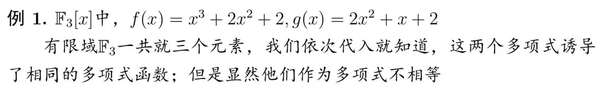
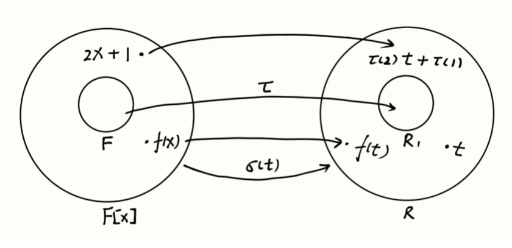

多项式*-|
Table of Contents
本文对我影响很深
这个文档是对下面两个视频的笔记——原视频效果非常好
复习（高等）代数中的多项式
BV1jg411e7qy|
非常棒：BV1tQ4y1c7A3|
1. 定义
非映射（不存在定义域和），是一个形式，可以没有取值。 使用形式幂级数定义这个形式。
有了加法乘法，得到环。 未定元 indeterminate 和未知量 unknown 不同，后者是方程。没有任何含义。
定义:
形式表达式 $$a_nx_n+a_{n-1}x_{n-1}+\cdots+a_1x+a_0$$
称为不定元多项式或整式， x 称为不定元。
2. 参数
最重要参数：次数
参数：系数、不定元、次数
- 系数：（一般限定于）指定数域
- 不定元：数域之外，任意取（即不能取代数元）
- 次数：自然数
国内都把x叫做未定元，关于x的形式表达式定义成多项式蛮容易让人困惑的。 其实柯斯特利金卷一的多项式讲得就那蛮清楚的， 定义成仅含有限非零项的无穷序列，乘积定义成离散序列卷积，然后再给出形式表达式。
加法是有差异的，特殊的，但不做区分
考虑所有这样的集合：组成环 \(F(+,\cdot)\)。 对加法交换群，乘法是幺半群
定义： 域 \(F\) 上一元多项式组成的集合记作 \(F[x]\) 称作一元多项式环。
3. 诱导多项式函数
构造一个代入多项式的映射： 将数域的值代入 ？同时涉及代入运算
多项式函数 \[f:F\to F\] \[t\mapsto a_nt^n+\cdots+a_1t+a_0\]
这是一个函数，判定条件不同：
| 类型 | 判定相等条件 | |
|---|---|---|
| 多项式 | 形式表达式 | 完全相同 |
| 多项式函数 | 映射 | 定义域、值域、对应规则 |
合同：两个多项式诱导相通的多项式函数
相同 \(\Rightarrow\) 合同
数域上成立（实数复数），一般的 
例: \(\mathbb{F}_3[x]\) \(f(x)=x^3+2x^2+2,g(x)=2x^2+x+2\)
012 模3
有限域不成立，需要无穷多元素
合同与相同：相等强于合同，本质上是两个纬度一个是形式，一个是映射
4. 意义
明明多项式函数更有意思，可以分析， 没有【意义】的多项式更具体的定义有什么【形式】意义？
正是因为多项式没有意义，就意味着它的意义没有受到限制， 我们可以自由地赋予意义。
强大之处在于，它不仅可以代入系数域中的元素， 还可以代入更一般的元素，进行拓展的运算，进而发现普世的规律
4.1. 一元多项式通用性质

将所有 x 换成 t ,数变成
域 \(F\) 相当于是环 \(F[x]\) 的子环，是系数为零的多项式集合
它们在运算性质上完全一样，保持运算『同态』。 如，研究矩阵多项式
使用环论语言描述： 交换环 \(R\) 是域 \(F\) 上的扩环，意为有 \(\tau:F\to R_1\overset{\text{ring}}{\subset} R\) 环中任意元素 \(t\) 可以诱导出环同态 \(\sigma(t):F[x]\to R\)
称 \(\sigma(t)\) 为把 t 代入 x ，同态像称为 t 的定元多项式
举例：矩阵运算的定元多项式 \(2A=2EA\)
把多项式送到多项式：
- 系数 \(a\mapsto \tau(a)\) 映到
多项式中的带余除法、裴蜀定理、整除
4.2. 超越元
代数元：是域上多项式的根；否则是超越元
E 是 F 的扩环（域）， E 中元素 a 是 \(F[x]\) 中多项式的根，称 a 为代数元。
例： \(\sqrt{2},\mathrm{i}\) 是 \(\mathbb{Q}\) 代数元； \(\pi\) 是超越元 实多项式函数的集合，可以有代数函数和超越函数
超越元具有特殊性，比如分析学取极限构造。 它们在原集合中像是无意义的符号，地位等同于不定元。同样定元就一定是代数元
只要系数域足够大，超越元迟早成为代数元
| 定元 | 代数元 | 代入多项式结果在扩环中 |
| 不定元 | 超越元 | 多项式结果是新元素 |
多元多项式：多项式上的多项式 \(F[x,y]\to F[x][y]\) 关于 y 的，系数是关于 x 多项式 ？柯里化
5. 性质
重要性质：是否可约
隐形定义可交换
添加性质更好－扩域
多元多项式环 \(F[x,y]=F[x][y]\) 依次添加
6. 多项式分解
有一个次数大于1 可约： \(f=f_1f_2=f_{11}f_{12}f_{2}\) 将多项式分解为一系列不可约多项式的乘积。
不可约多项式与其他多项式要么整除，要么互素
6.1. 互素分解
拆成互素多项式，这至少两个互素因子。
6.2. 不可约分解
：一定存在，相伴时唯一（相差常数倍） 唯一的体现： 分解是： \(f=p\cdots p_t=q\cdots q_s\)
- s = t
- 可以重排得到 \(p_j\sim q'_j\)
证明使用数学归纳法
素元、不可约元
使用不可约元是素元
6.3. 方幂和展开
想到进制数位表示倍数 使用一个表示另一个（完全是除法） \(f(x)\) 的 \(g(x)\) 表示
部分分式分解定理